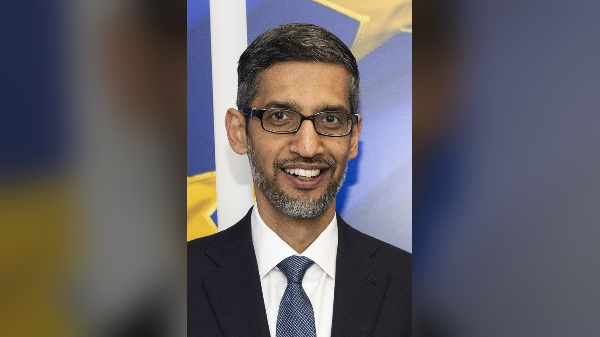
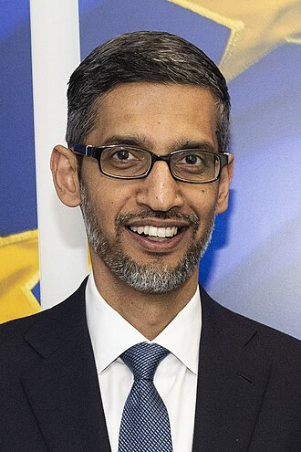
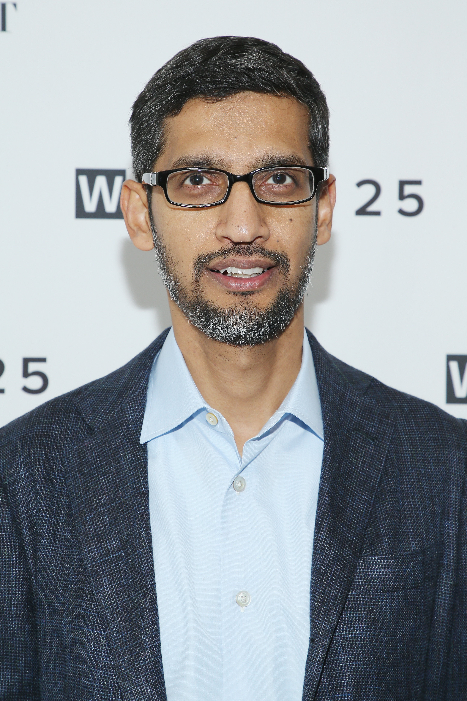
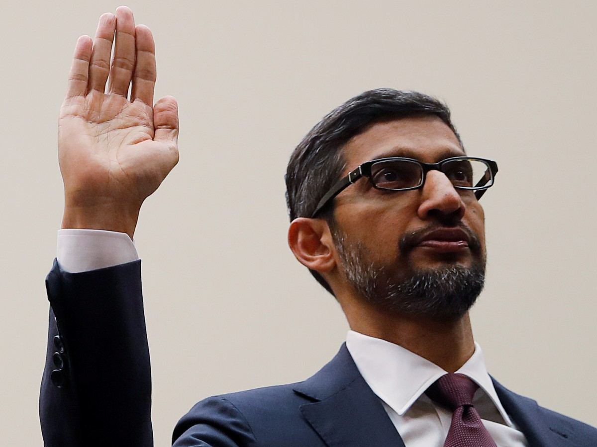

_cropped.jpg){kind=link}









run_2026-09-03T16-10-03Z · pipeline 1.0.0

8e2e4fc7f6a119a16b45d7cb177975f95cf3c2d7e52be642ccc14f783f65bb4ffcdbd6c0169bfc5312282d23f9da28e3349c9186fe5691cab935a459feabb3b48e2e4fc7f6a119a16b45d7cb177975f95cf3c2d7e52be642ccc14f783f65bb4fEach one was embedded and scored against the probe face. The rejects are kept deliberately: they are the evidence that a real search ran.




0xb9bbc6b18ae87970a0136bf6936a7e26d8cd96a37686ea8a60d7388d59829d620x56394614d21b38C0557810e1Bb1D934b4620B9C40xd6d07f2024b7d8d7b809608101015b7db380b0d6d943b75cc342f39a3aa4699cThe exact structure that was hashed and anchored.
{
"embedding_sha256": "fcdbd6c0169bfc5312282d23f9da28e3349c9186fe5691cab935a459feabb3b4",
"input_image_sha256": "8e2e4fc7f6a119a16b45d7cb177975f95cf3c2d7e52be642ccc14f783f65bb4f",
"match": {
"image_sha256": "8e2e4fc7f6a119a16b45d7cb177975f95cf3c2d7e52be642ccc14f783f65bb4f",
"image_url": "https://upload.wikimedia.org/wikipedia/commons/c/c3/Sundar_Pichai_-_2023_(cropped).jpg?utm_source=en.wikipedia.org&utm_campaign=index&utm_content=original",
"page_title": "Sundar Pichai - Wikipedia",
"post_url": "https://en.wikipedia.org/wiki/Sundar_Pichai",
"similarity": "1.0000"
},
"pipeline_version": "1.0.0",
"schema": "face-chain-verify/v1",
"search": {
"candidate_count": 30,
"provider": "serpapi_google_lens",
"query_image_sha256": "8e2e4fc7f6a119a16b45d7cb177975f95cf3c2d7e52be642ccc14f783f65bb4f",
"retrieved_at": "2026-09-03T16:10:20Z"
}
}